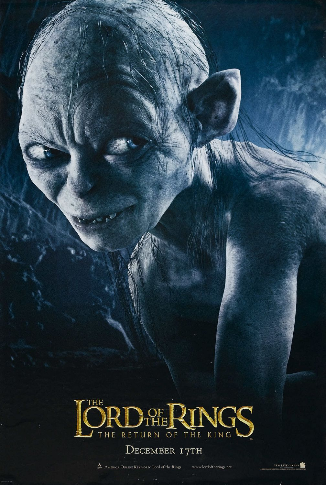

Amintiri din copilarie
Ş-apoi Humuleştii, şi pe vremea aceea, nu erau numai aşa, un sat de oameni fără căpătâi, ci sat vechi
răzăşesc, întemeiat în toată puterea cuvântului: cu gospodari tot unul şi unul, cu flăcăi voinici şi
fete mândre, care ştiau a învârti şi hora, dar şi suveica, de vuia satul de vatale în toate părţile; cu
biserică frumoasă şi nişte preoţi şi dascăli şi poporeni ca aceia, de făceau mare cinste satului lor. Şi
părintele Ioan de sub deal, Doamne, ce om vrednic şi cu bunătate mai era! Prin îndemnul său, ce mai pomi
s-au pus în ţintirim, care era îngrădit cu zăplaz de bârne, streşinit cu şindilă, şi ce chilie durată
s-a făcut la poarta bisericii pentru şcoală; ş-apoi, să fi văzut pe neobositul părinte cum umbla prin
sat din casă în casă, împreună cu bădiţa Vasile a Ilioaei, dascălul bisericii, un holtei zdravăn, frumos
şi voinic, şi sfătuia pe oameni să-şi dea copiii la învăţătură. Şi unde nu s-au adunat o mulţime de
băieţi şi fete la şcoală, între care eram şi eu, un băiat prizărit, ruşinos şi fricos şi de umbra mea.
Şi cea dintâi şcolăriţă a fost însăşi Smărăndiţa popii, o zgâtie de copilă ageră la minte şi aşa de
silitoare, de întrecea mai pe toţi băieţii şi din carte, dar şi din nebunii. Însă părintele mai în toată
ziua da pe la şcoală şi vedea ce se petrece…
Capra cu 3 iezi
Atunci mezinul se vâră iute în horn şi, sprijinit cu picioarele de prichiciu şi cu nasul de funingine,
tace ca peştele şi tremură ca varga de frică. Dar frica-i din raiu, sărmana! Asemene cel mijlociu,
tuştiu! iute sub un cherşin; se-nghemuieşte acolo cum poate, tace ca pământul şi-i tremură carnea pe
dânsul de frică: Fuga-i ruşinoasă, da-i sănătoasă!
Însă cel mare se dă după uşă şi: să tragă, să nu tragă? în sfârşit, trage zăvorul… Când iaca! ce să
vadă? ş-apoi mai are când vede? căci lupului îi scăpărau ochii şi-i sfârâia gâtlejul de flămând ce era.
Şi, nici una, nici două, haţ! pe ied de gât, îi răteză capul pe loc şi-l mănâncă aşa de iute şi cu atâta
poftă, de-ţi părea că nici pe-o măsea nu are ce pune. Apoi se linge frumuşel pe bot şi începe a se
învârti prin casă cu neastâmpăr, zicând:
– Nu ştiu, părerea m-a amăgit, ori am auzit mai multe glasuri? Dar ce Dumnezeu?! Parc-au intrat în
pământ… Unde să fie? Se iţeşte el pe colo, se iţeşte pe dincolo, dar pace bună! iezii nu-s nicăiri!
– Mă! că mare minune-i asta! dar nici acasă n-am de coasă… ia să mai odihnesc oleaca aste bătrâneţe!
Padurea spanzuratilor

Sub cerul cenuşiu de toamnă ca un clopot uriaş de sticlă aburită,
spânzurătoarea nouă şi sfidătoare, înfiptă la marginea satului,
întindea braţul cu ştreangul spre câmpia neagră, înţepată ici-colo cu
arbori arămii. Supravegheaţi de un caporal scund, negricios, şi
ajutaţi de un ţăran cu faţa păroasă şi roşie, doi soldaţi bătrâni săpau
groapa, scuipându-şi des în palme şi hâcâind a osteneală după
fiecare lovitură de târnăcop. Din rana pământului groparii zvârleau
lut galben, lipicios...
Caporalul îşi răsucea mustăţile şi se uita mereu împrejur,
cercetător şi cu dispreţ. Priveliştea îl supăra, deşi căuta să nu-şi dea
pe faţă nemulţumirea. În dreapta era cimitirul militar, înconjurat cu
sârmă ghimpată, cu mormintele aşezate ca la paradă, cu crucile
albe, proaspete, uniforme. În stânga, la câţiva paşi, începea cimitirul
satului, îngrădit cu spini, cu cruci rupte, putrezite, rare, fără poartă,
ca şi cum de multă vreme nici un mort n-ar mai fi intrat acolo şi nici
n-ar mai vrea să intre nimeni...
Satul Zirin, cartierul diviziei de infanterie, se ascundea sub o
pânză de fum şi de pâclă, din care de-abia scoteau capetele, sfioase
şi răsfirate vârfuri de pomi desfrunziţi, câteva coperişe ţuguiate de
paie şi turnul bisericii, spintecat de un obuz. Spre miazănoapte se
vedeau ruinele gării şi linia ferată ce închidea zarea ca un dig fără
început şi fără sfârşit. Şoseaua, însemnată cu o dungă dreaptă pe
câmpul mohorât, venea din apus, trecea prin sat şi se ducea tocmai
pe front...
The Lord of the Rings

When they had walked for about three hours they rested. The
night was clear, cool, and starry, but smoke-like wisps of mist were
creeping up the hill-sides from the streams and deep meadows. Thinclad birches, swaying in a light wind
above their heads, made a black
net against the pale sky. They ate a very frugal supper (for hobbits),
and then went on again. Soon they struck a narrow road, that went
rolling up and down, fading grey into the darkness ahead: the road
to Woodhall, and Stock, and the Bucklebury Ferry. It climbed away
from the main road in the Water-valley, and wound over the skirts
of the Green Hills towards Woody End, a wild corner of the
Eastfarthing.
After a while they plunged into a deeply cloven track between tall
trees that rustled their dry leaves in the night. It was very dark. At
first they talked, or hummed a tune softly together, being now far
away from inquisitive ears. Then they marched on in silence, and
Pippin began to lag behind. At last, as they began to climb a steep
slope, he stopped and yawned.